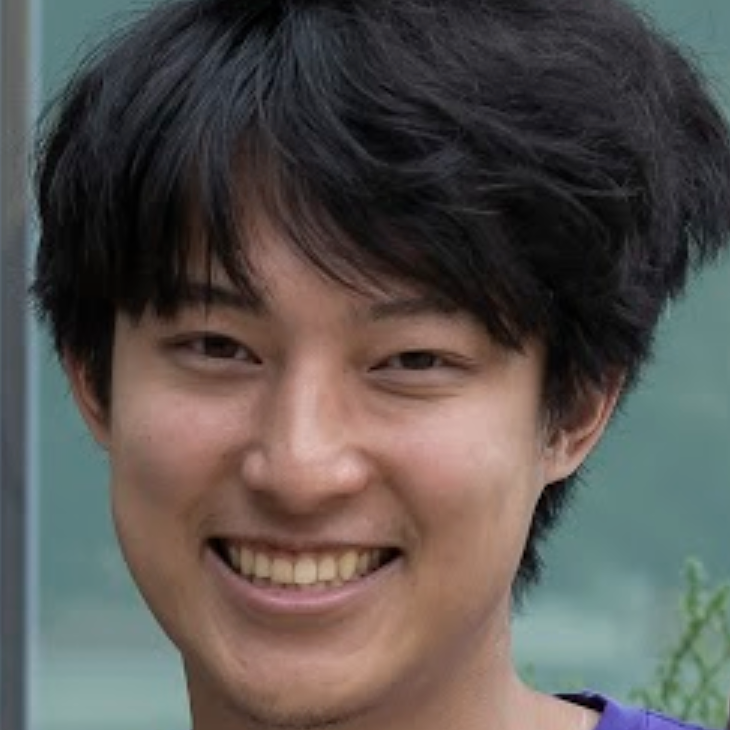
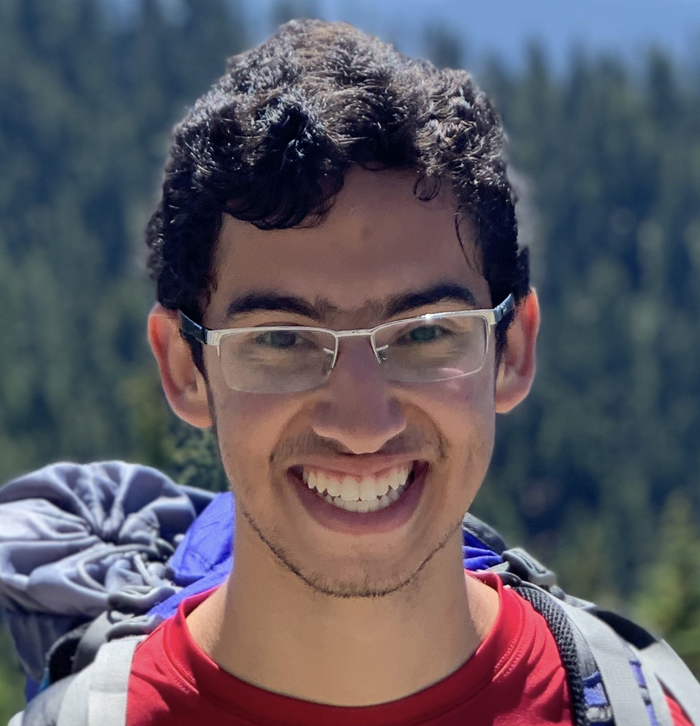

UMD Computer Vision Seminar
UMD Computer Vision SeminarThe UMD Computer Vision Seminar hosts talks from internal and external speakers on a variety of topics across computer vision, machine learning, graphics, and computational imaging.
Past: Fall 2023 , Spring 2023Time: Mondays 12PM-1PM
Organizers: Hadi Alzayer and Kevin Zhang
Location: IRB 4105 (sometimes 3137)
| 
Kevin Zhang UMD |
2024-02-05, first halfFusing RGB and Imaging Sonar Data using Neural SurfacesAbstract: Underwater perception and 3D surface reconstruction are challenging problems with broad applications in construction, security, marine archaeology, and environmental monitoring. Treacherous operating conditions, fragile surroundings, and limited navigation control often dictate that submersibles restrict their range of motion and, thus, the baseline over which they can capture measurements. In the context of 3D scene reconstruction, it is well-known that smaller baselines make reconstruction more challenging. Our work develops a physics-based multimodal acoustic-optical neural surface reconstruction framework capable of effectively integrating high-resolution RGB measurements with low-resolution depth-resolved imaging sonar measurements. By fusing these complementary modalities, our framework can reconstruct accurate high-resolution 3D surfaces from measurements captured over heavily-restricted baselines. Through extensive simulations and in-lab experiments, we demonstrate that our method dramatically outperforms recent RGB-only and sonar-only inverse-differentiable-rendering-based surface reconstruction methods. |
|
Sachin Shah UMD |
2024-02-05, second halfCodedEvents: Optimal Point-Spread-Function Engineering for 3D-Tracking with Event CamerasAbstract: Point-spread-function (PSF) engineering is a well-established computational imaging technique used to embed extra information into images captured by RGB CMOS sensors through the customization of optical systems. However, designed optics have been largely unexplored for neuromorphic event camera sensors. This paper pushes the boundaries of computational imaging by deriving fundamental limits of event-based imaging for 3D point light source tracking. Through simulation, we illustrate that these information-theoretical bounds can design optimal lenses for event cameras. Additionally, we introduce a novel implicit neural representation system for the optimization of binary apertures, addressing the challenges associated with gradient descent in the context of binary parameters. Finally, we present a physical prototype of our learned coded aperture in conjunction with an event camera and showcase its performance for 3D tracking. |

Aswin Sankaranarayanan CMU |
2024-02-12Computational Optics for 3D Display DesignAbstract: Digitization of reality is at the cusp of widespread adoption and 3D displays are at the forefront of enabling such extended reality systems. For an immersive experience, a 3D display must faithfully reproduce the visual cues pertaining to vergence, accommodation, occlusion, and motion parallax. I will talk about recent work on computational display designs that enable such features in near-eye displays. |
| 
Hadi Alzayer UMD |
2024-02-19, first halfFixing coarse edits with diffusion modelsAbstract: Editing a photograph by rearranging its components parts to produce a realistic output is a meticulous and time-consuming process, that is prone to illusion-breaking mistakes. However, making rough edits to quickly convey the intended composition and concept is easy for a human. We propose a generative method that takes a roughly edited image as input and synthesizes a photorealistic image that follows the prescribed layout, transferring fine details from the original unedited image to preserve the identity of its parts while adapting its content to the lighting and context defined by the new layout. We show that using simple segmentations and coarse 2D manipulations, we can sythesize a photorealistic edit that's faithful to the user's input, while addressing second-order effects like harmonizing the lighting and physical interactions between edited objects. |
|
Yixuan Ren UMD |
2024-02-19, second halfVideo Motion CustomizationAbstract: Image customization has been extensively studied in text-to-image (T2I) diffusion models, resulting in impressive outcomes and applications. With the emergence of text-to-video (T2V) diffusion models, its temporal counterpart, motion customization, has not yet been fully investigated. We propose Customize-A-Video, a one-shot motion customization method which models the motion from a single reference video and adapting it to new subjects and scenes with spatial and temporal varieties. It utilizes low-rank adaptation (LoRA) on temporal attention layers to tailor the pre-trained T2V diffusion model for specific modeling of motion from the reference video. We also introduce a novel concept of appearance absorbers to disentangle the spatial and temporal information from the single reference video during training. Our proposed method can be easily extended to various downstream tasks, including custom text/image-to-video generation and editing, as well as multimodal integrated customization, in a plug-and-play fashion. |
|
Roni Sengupta
UNC Chapel Hill |
2024-02-26Building Personalized and Efficient 3D ModelsAbstract: Creating 3D models from casual camera captures enables various creative and cognitive applications for AR/VR, Computational Photography, Robotics, and Medical Imaging. Nonetheless, the underlying 'engines' propelling these 3D models comprising the hardware systems for capture and machine learning models are often expensive to build, thereby constraining widespread accessibility. In this talk, I will discuss my group's effort to develop efficient and accessible 3D models. The first part of the talk will focus on developing lightweight and personalized 3D generative models for facial reconstruction and relighting. The last part of the talk will focus on developing efficient 3D reconstruction algorithms that combine both camera and lighting variations for objects, scenes, and endoscopy images. |